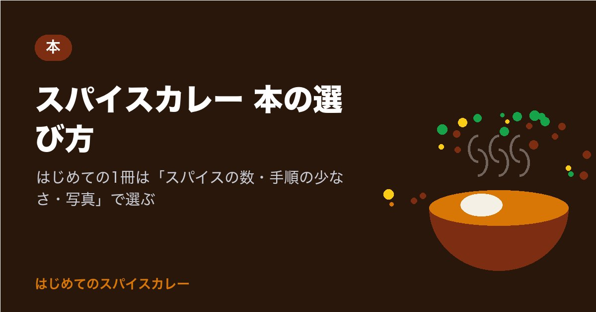

スパイスカレー 本の選び方｜はじめての1冊は「スパイスの数・手順の少なさ・写真」で選ぶ
※この記事はプロモーション（広告）を含みます

スパイスカレーを作ってみたくて、本屋さんの料理コーナーで「どれから読めばいいんだろう」と立ち止まったことはありませんか。
はじめての1冊は、「使うスパイスが3〜4種類」「手順が少ない」「工程の写真が多い」の3つがそろったレシピ本を選ぶと、つまずきにくくなります。スパイスの事典や本場の料理本は、何皿か作ってからの2冊目にすると、書いてあることがぐっと分かりやすくなります。
この記事では、スパイスカレーの本の種類と、それぞれが向いている人、書店や図書館で中身を確かめるときに見るところを、順番に紹介します。
スパイスカレーの本は大きく4種類
スパイスカレーの本と一口にいっても、目的によって中身がかなり違います。まずは、どんな種類があるのかを並べてみます。
| 種類 | 中身の中心 | 向いている人 | 読むタイミング |
|---|---|---|---|
| はじめての人向けのレシピ本・マンガ | 少ないスパイスで作る基本の数皿 | これから最初の1皿を作る人 | 1冊目 |
| 作り方の考え方を学ぶ本 | 手順の意味、味の組み立て方 | 「なぜこの順番なのか」を知りたい人 | 数皿作ってから |
| スパイスの事典・図鑑 | スパイスごとの香り・使い方・相性 | 手持ちのスパイスを使いこなしたい人 | 2冊目以降 |
| 本場インド料理・専門店の本 | 地方ごとの料理、多くのスパイス | 本格的な味に近づけたい人 | 慣れてから |
どれが良い・悪いではなく、いまのあなたの段階に合っているかどうかが大切です。最初の1皿を作る前に、スパイスが十数種類並ぶ本格的な本を選ぶと、材料をそろえるだけで疲れてしまうことがあります。
こんな声を想像してみてください。「写真がきれいな本を買ったら、知らないスパイスばかりで、結局一度も作れませんでした」
こうしたつまずきは、本の良し悪しではなく、段階と本の組み合わせが合っていなかっただけです。次の章の3つの見方で選べば、防ぎやすくなります。
最初の1冊で見たい3つのところ
書店や図書館で本を手に取ったら、目次と最初のレシピのページを開いて、次の3つを確かめてみてください。
1. 使うスパイスの数が少ないか
基本のレシピで使うスパイスが、クミン・コリアンダー・ターメリックの3つ前後から始まっている本は、はじめての人に向いています。この3つは、スパイスカレーの香り・とろみ・色の土台になるスパイスです。
- 基本のレシピに使うスパイスを数えて、3〜4種類なら安心です
- 「スパイスは〇種類だけ」と表紙や帯に書いてある本も、選ぶときの手がかりになります
- 3つのスパイスの役割は、クミンの使い方と相性のいい食材などの記事でも紹介しています
2. 手順が少なく、順番が分かりやすいか
スパイスカレーは、炒め始めると手を止めにくい料理です。手順が細かく分かれすぎていると、読みながら作るのが大変になります。
- 1つのレシピの手順が5〜8ステップ程度にまとまっているか
- 「ホールスパイス → 玉ねぎ → パウダースパイス → 具材 → 水分」のように、入れる順番がひと目で分かるか
- 材料の表に、分量が「小さじ」「大さじ」「g」で書いてあるか
3. 工程の写真が多いか
玉ねぎを炒める色の変化や、スパイスを入れたあとの見た目は、文字だけでは伝わりにくいところです。
- 玉ねぎの炒め具合が、写真で段階ごとに見られるか
- 完成写真だけでなく、途中の鍋の中の写真があるか
玉ねぎの色の目安は、玉ねぎの炒め方で変わるスパイスカレーの味でも段階ごとにまとめています。
種類別に、よく知られている本の例
ここでは、書名と出版社を確かめられた本だけを、種類ごとの例として紹介します。中身の紹介は、出版社や書店の紹介文で確かめられる範囲にとどめています。版が新しくなったり、品切れになったりすることがあるので、買う前に書店や出版社のページで最新の情報を確かめてください（2026年11月2日時点で確認）。
| 種類 | 本の例 | 確かめた情報 |
|---|---|---|
| マンガで学ぶ入門 | 『私でもスパイスカレー作れました!』 | 印度カリー子 著、こいしゆうか マンガ、サンクチュアリ出版 |
| 作り方の考え方を学ぶ | 『スパイスカレーを作る 自分好みのカレーが作れるメソッド&テクニック』 | 水野仁輔 著、パイ インターナショナル |
| スパイスの事典 | 『スパイス&ハーブの使いこなし事典』（4訂版） | 主婦の友社。スパイス&ハーブ検定の公式テキストとして紹介されています |
| インド人シェフに学ぶ | 『インドカレーは自分でつくれ』（平凡社新書） | 田邊俊雅・メヘラ・ハリオム 著、平凡社 |
- マンガで学ぶ入門の本は、文字ばかりの料理本が苦手な人や、まず全体の流れをつかみたい人に向いています
- 作り方の考え方を学ぶ本は、レシピどおりに何皿か作れたあと、「自分好みの味に変えたい」と思ったときに役立ちます
- スパイスの事典は、1つのスパイスを調べたいときに引く本です。最初から通して読むより、手元のスパイスのページを開く使い方が向いています
- 新書の料理本は、写真が少なめのぶん、考え方や背景をじっくり読みたい人に向いています
ここに挙げた本は、あくまで種類ごとの例です。同じ種類の本はほかにもたくさんあるので、次の章の探し方で、あなたが読みやすいと感じる1冊を選んでください。
書店・図書館・ネットでの確かめ方
料理本は、読みやすさの感じ方が人によって大きく違います。買う前に中身を見られると安心です。
- 書店で：料理コーナーの「カレー」「エスニック」「インド料理」の棚を見ます。目次と基本のレシピのページを開いて、前の章の3つを確かめます
- 図書館で：料理の棚（図書館の分類では「596」が食品・料理の番号です）にまとまっていることが多いです。借りて実際に1皿作ってみてから、手元に置きたい本を買うと、むだがありません
- ネットで：書店のサイトや出版社のページで、目次や試し読みが公開されていることがあります。レビューは参考にしつつ、「はじめての人に分かりやすいか」に触れているものを重く見ると選びやすくなります
- 電子書籍で：台所でスマホやタブレットを立てて見られるのが便利です。ただ、手が濡れたり汚れたりしやすいので、紙の本と合わせて使い分ける人もいます
本で探すときの検索語は、「スパイスカレー 初心者」「スパイスカレー 3種類」「スパイス 事典」のように、あなたの段階を表す言葉を足すと、目当ての本にたどり着きやすくなります。
向かない人・注意点
本は、手順を順番に追いながら作りたい人には心強い道具です。一方で、次のような場合は、まず別の方法から始めたほうが楽なこともあります。
- 動きや音で覚えたい人：炒める音や色の変化は、動画のほうが分かりやすいことがあります。本は分量と手順の確認用にすると、両方の良さを活かせます
- 家にスパイスがほとんど無い人：本を買う前に、クミン・コリアンダー・ターメリックの3つをそろえるほうが、最初の1皿に早くたどり着けます
- レシピの分量：本によって「何人分」の書き方が違います。作る前に、材料の表の人数を確かめてから量を合わせると安心です
2冊目は「作りたいもの」から選ぶ
基本のチキンカレーなどを何度か作って、手順に慣れてきたら、2冊目は「次に何を作りたいか」から選ぶと失敗しにくくなります。
| 次にしたいこと | 選ぶ本の種類 | 先に読んでおくと役立つ記事 |
|---|---|---|
| 豆や野菜のカレーを増やしたい | 野菜・豆のカレーが多いレシピ本 | 野菜だけで作るスパイスカレー |
| 手持ちのスパイスを使いこなしたい | スパイスの事典・図鑑 | ホールスパイスとパウダーの使い分け |
| 自分好みの味に調整したい | 作り方の考え方を学ぶ本 | スパイスカレーの辛さの調整のしかた |
| 本場の味に近づけたい | 本場インド料理の本 | ガラムマサラの使い方と入れるタイミング |
本を読んで作ってみたら、気づいたことを本の余白や付せんにメモしておくのもおすすめです。「玉ねぎはもう少し長く炒める」「チリは半分で十分」のように書いておくと、次に作るとき、その本があなただけのレシピ帳になります。
まとめ
- スパイスカレーの本は、はじめての人向けのレシピ本・作り方の考え方を学ぶ本・スパイスの事典・本場インド料理の本の大きく4種類
- 最初の1冊は、スパイスが3〜4種類・手順が少ない・工程の写真が多いの3つで選ぶと、つまずきにくい
- 事典や本場の料理本は、何皿か作ってからの2冊目にすると、書いてあることが分かりやすい
- 買う前に、書店や図書館で目次と基本のレシピのページを確かめると安心
ここまで読んでくださって、ありがとうございます。
まずは次に書店か図書館へ行ったとき、料理コーナーで1冊だけ手に取って、基本のレシピに使うスパイスの数を数えてみませんか。この1つだけで、あなたに合う本かどうかが、すぐに分かります。
あなたが最初に作ってみたいのは、どんなカレーですか？
最後まで読んでくださり、ありがとうございました。
まずは、家にあるスパイスを確かめるところから。クミン・コリアンダー・ターメリックの3つがそろえば、次の休みに最初の1皿に挑戦できます。
あなたなら、どのカレーから作ってみますか？
この記事は下書きにAIを使い、内容は運営者が公式情報で確認しています。画像はAIで作成したイメージです。